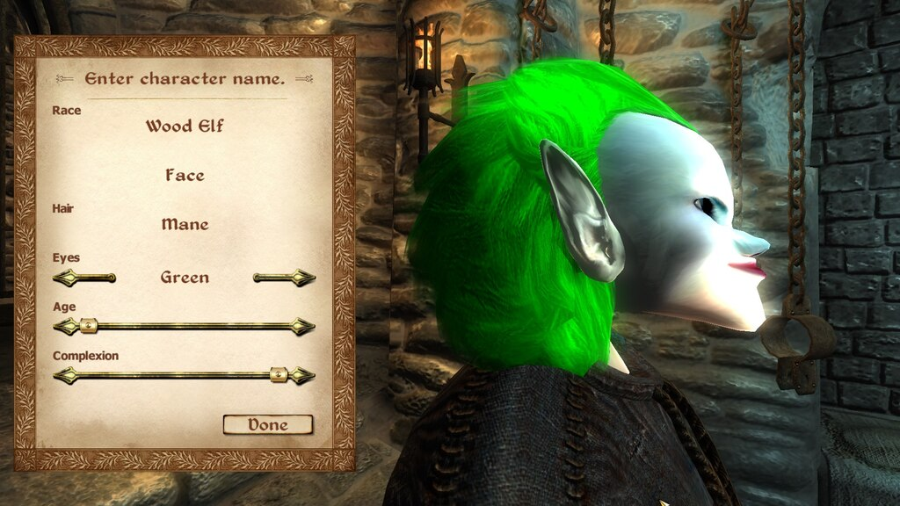

공격적인 어그로덱을 선호한다. 다만 방송의 재미를 위해서인지 해적전사, 어그로 주술사 같은 일명 노양심 어그로 덱은 안하는 편이며 억결덱이나 기계술사 같은 마이너덱을 오히려 즐겨한다. 메이저 덱중에서는 템포법사를 많이 하는 편. 대회에서 다른 선수들이 오랜 시간 고민하며 플레이하는 반면, 턴이 돌아오면 할 것을 재빠르게 끝내고 턴을 넘기는 시원시원한 스타일이다.
그때그때 래더 대세덱 중에 강하고 공격적인 덱을 돌리는데, 상대가 가지고 있을 최악의 수를 예측하는 실력이 아주 일품이다. 이 상황에서는 '나이사만 아니면 돼!' 하면 귀신같이 오른쪽에서 나이사가 나오고, 돌냥에서도 요즘 잘 안 쓰이는 카드인 '리로이만 아니면 안 죽어'하면 귀신같이 리로이쓰는 돌냥이라 죽게 되고 멘탈이 깨지는 게 주요 방송 컨텐츠.
이러한 플레이 성향은 대회에서 약점으로 많이 작용한다. 컨스에서는 이점이 될 수 있는 배제 플레이가 대회에서는 악수가 되는 경우가 많다.
대회 한번 못 나오는 거 보면 그냥 일반 유저랑 별 차이가 없다는 비아냥 섞인 목소리가 나오는 이유도 이 때문. 덕분에 2015 블리즈컨 포인트 8위의 실력자이지만 대회와는 유독 연이 없다. 또한 하스스톤 상위 게이머들이 때때로 보여주는 섬세한 계산 플레이 능력과 덱을 만들고 개선하는 능력은 오랜 카드게임 경력에도 불구하고 거의 없다고 봐도 무방하다. 모독 이후론 섬세한 계산 능력이 돋보이기 시작해 흑마 그 자체가 되었다.
공혁준 본인의 말로는 등급전 같은 중요도가 떨어지는 경기에서는 배제 플레이를 많이 하나, 대회에서는 등급전과는 다르게 모든 경우의 수를 생각하고 안정적인 선택을 한다고 한다. 실제로 15년 12월에 있었던 유명 스트리머들만 모아서 경기한 트위치 프리미어리그에서도 4강까지 간 것을 보면 저 정도의 비난은 약간 걸러서 들어야 한다.
함께 유희왕을 하던 스트리머이자 하스스톤 프로게이머 서긔에 의하면 유희왕 시절 때부터 생각없이 플레이해서 욕을 먹었다고 한다. 배제 플레이는 생각없이 플레이하는 성향이 나온 것으로 보인다
